Proyectos
Umbral de Falla
Esta investigación relaciona los movimientos telúricos y las formas en que estos procesos se manifiestan a escala humana. Situada en el contexto tectónico de Valparaíso, explora fenómenos que operan de manera continua bajo la superficie, aunque sus efectos suelen hacerse perceptibles únicamente cuando la tensión acumulada supera un punto crítico y produce una ruptura.
Umbral de falla nombra ese límite inestable entre la tensión contenida y su liberación, referenciando el doble sentido de la falla: como fractura geológica y como alteración de un sistema. La obra consiste en un dispositivo lítico sometido a tensión y vibración continua, activado en tiempo real por datos sísmicos abiertos de la red de monitoreo de Valparaíso.
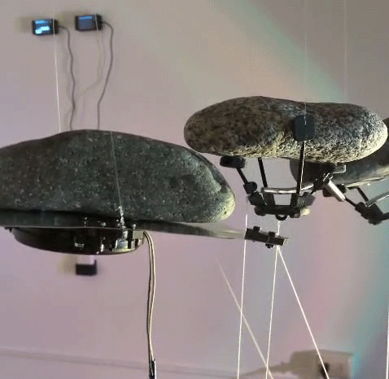
En Lista de espera
Un movimiento de placas tectónicas puede tardar siglos en producir una grieta visible en la superficie. Sin embargo, su desplazamiento ya está en curso.
Aunque los procesos geológicos han dado forma a civilizaciones, mitologías y paisajes culturales, no forman parte de nuestra experiencia cotidiana. Persisten como fondo estable que se vuelve evidente cuando se manifiesta como ruptura: un temblor, una erupción, una grieta. El proyecto busca registrar el instante en que esa temporalidad no-humana se vuelve sensible.
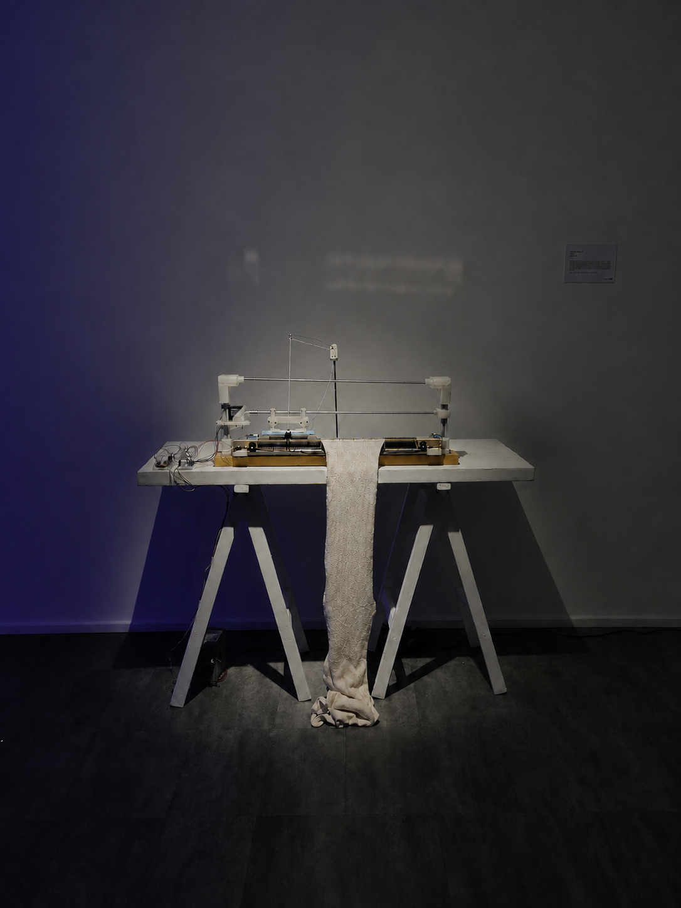
En Lista de espera es una instalación en tiempo real que vincula eventos sísmicos con producción textil automatizada. Una máquina de tejer permanece conectada a un sistema virtual que monitorea la actividad sísmica global. Cuando ocurre un sismo mayor a 4.5 grados, la máquina se activa y teje un segmento de hilo para luego detenerse.
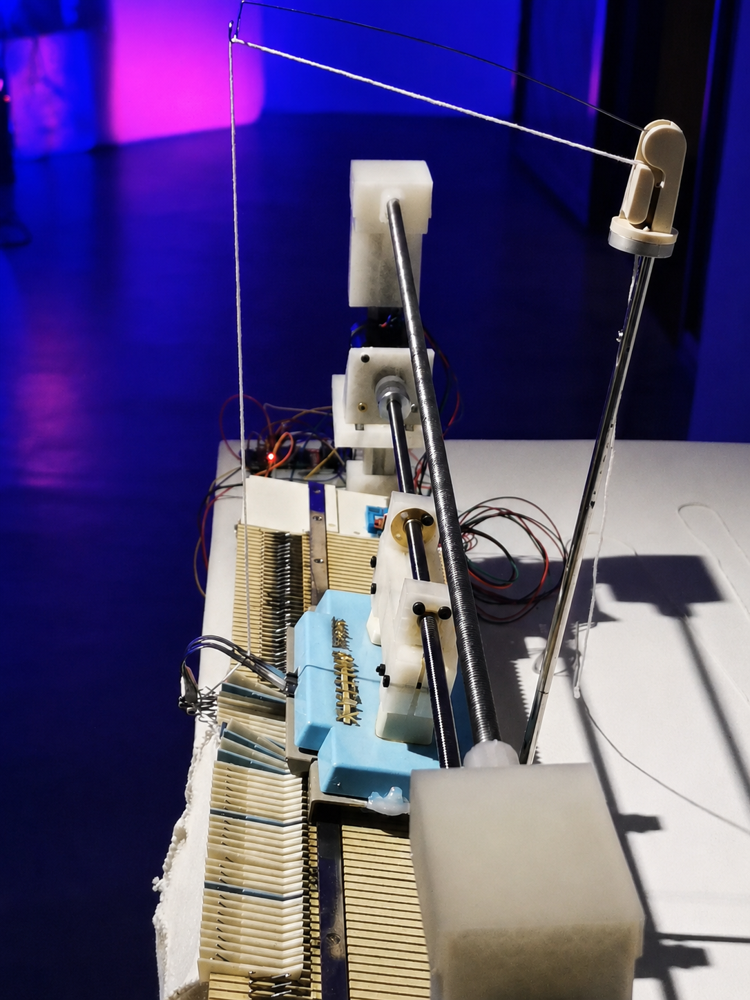
Años Luz
Una porción del ruido blanco que escuchamos al sintonizar una radio proviene de la radiación de fondo de microondas, una huella electromagnética remanente del Big Bang. Esta idea sirvió como punto de partida para una colaboración con mi padre en la intervención de una prenda de su colección New Wave.
El saco, confeccionado por mi abuela, se transformó en una antena textil mediante bordado en punto de cruz con hilo conductivo de acero.
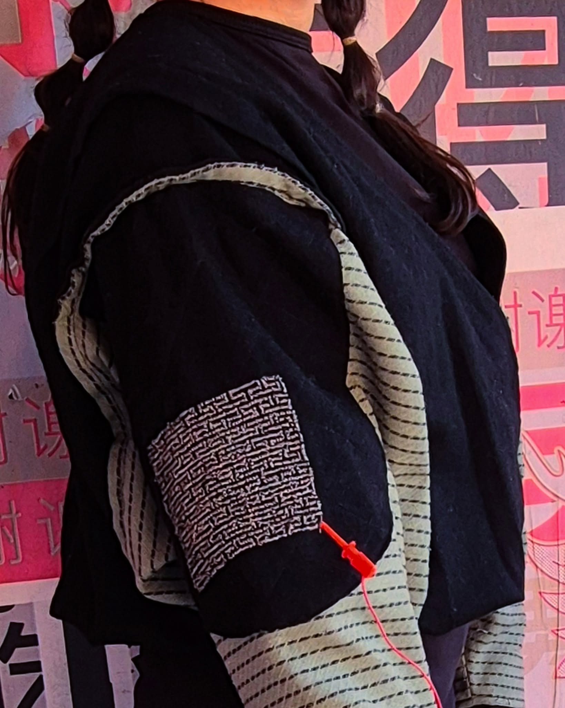
La antena se conecta a un potenciómetro que regula la relación entre dos pines del sensor CMOS de una cámara digital, inyectando ruido eléctrico que genera alteraciones cromáticas sobre el glitch original.
El resultado cruza lo cósmico y lo cotidiano, el lenguaje del bordado y el electromagnético: años luz de distancia codificados como interferencia visual.
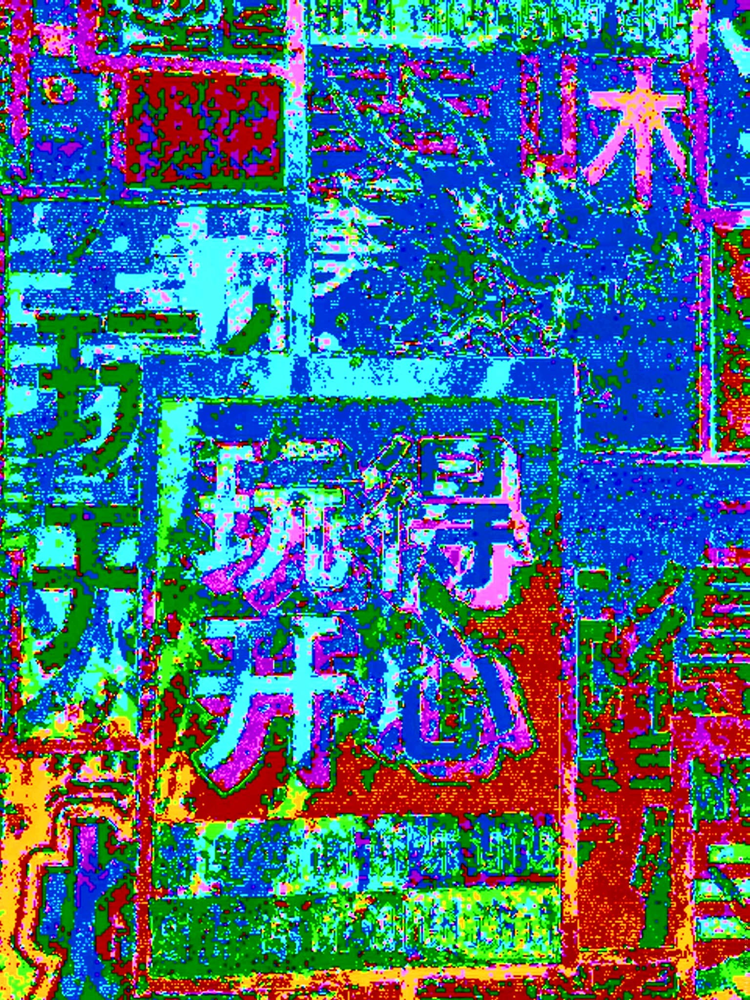
Hacer Tierra
tepetl.txt
tepetl.txt es un archivo textil que traduce el monitoreo de señales verticales del volcán Popocatépetl en patrones visuales. Mediante bloques Unicode, los datos se transforman en una estructura gráfica materializada en trama y urdimbre. La sismografía, la codificación digital y la práctica textil convergen en un registro visual del movimiento volcánico.
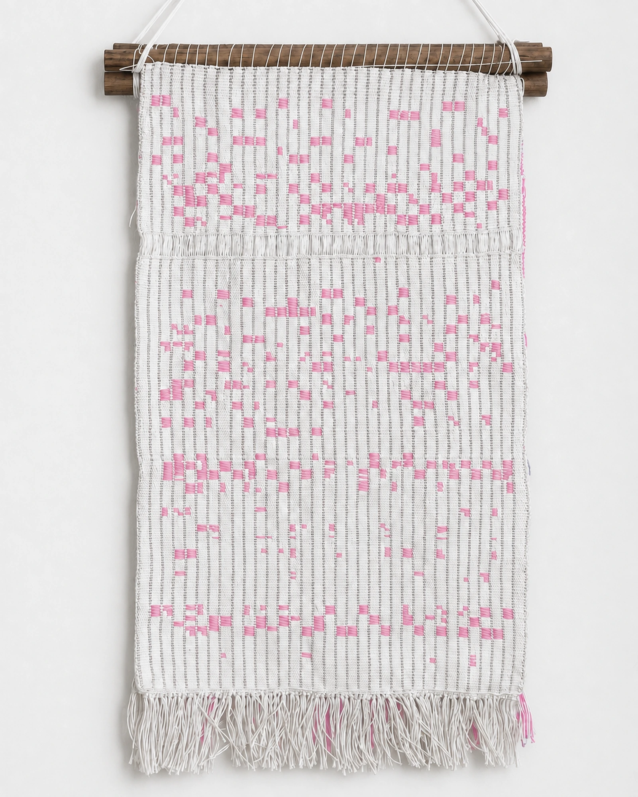
Un volcán no es una estructura fija, sino un proceso: una apertura de la tierra donde fluye el tiempo geológico. Su forma es un espejismo de estabilidad, una montaña que puede convertirse en fuego y ceniza. En la frontera entre creación y destrucción, el paisaje volcánico confronta la fragilidad de nuestra existencia.
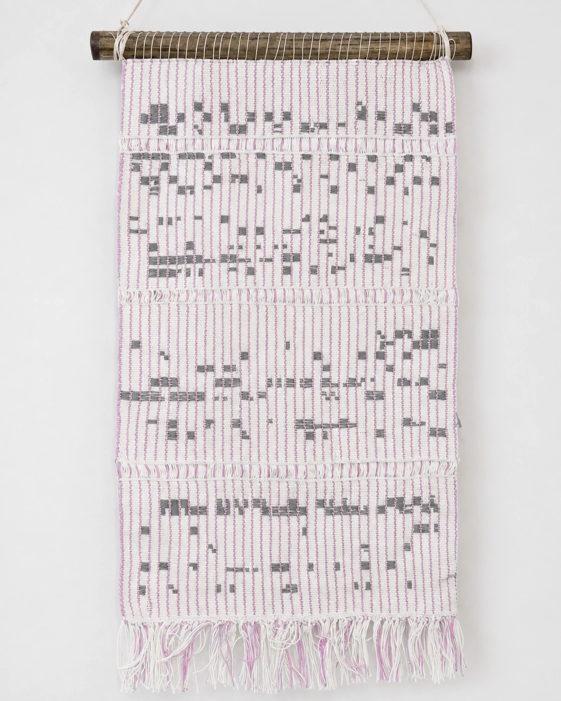
Hello Voyager
Entre líneas
Utilizando grabaciones sonoras de conversaciones íntimas con personas voluntarias, se generaron patrones visuales a partir de las gráficas de frecuencia de estos registros, que después se convirtieron en una pieza textil interactiva. La instalación se activa al detectar la voz del público, integra sus conversaciones en los paneles y activa secciones tejidas con hilos termocrómicos que cambian de color, creando una lectura dinámica del bordado. Así, hilos y palabras se entrelazan y su significado evoluciona con cada interacción.
Using sound recordings of intimate conversations with volunteers, visual patterns were generated from the frequency graphs of these recordings and turned into an interactive textile piece. The installation activates when it detects the audience's voice, integrating their conversations into the panels and triggering sections woven with thermochromic threads that change color, creating a dynamic reading of the embroidery. Thus, threads and words intertwine, and their meaning evolves with each interaction.
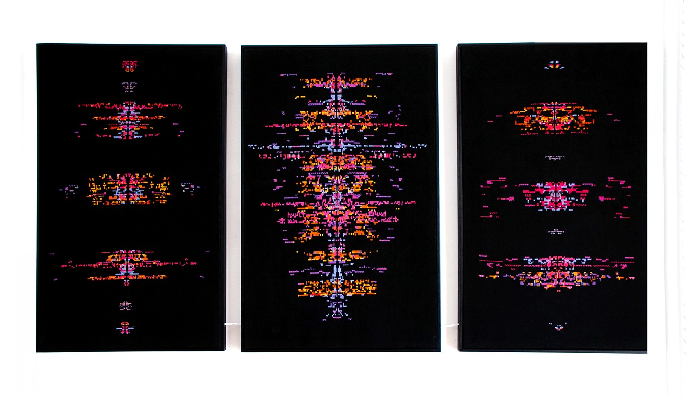
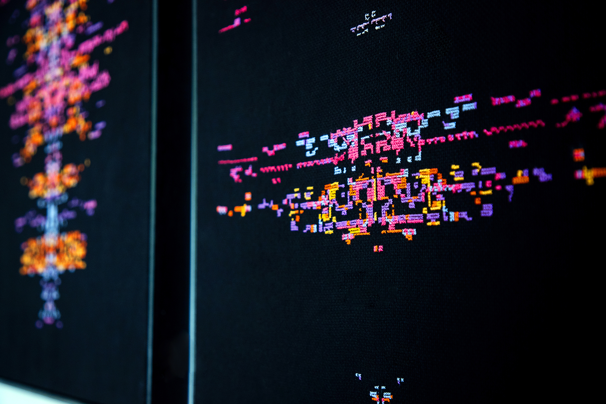
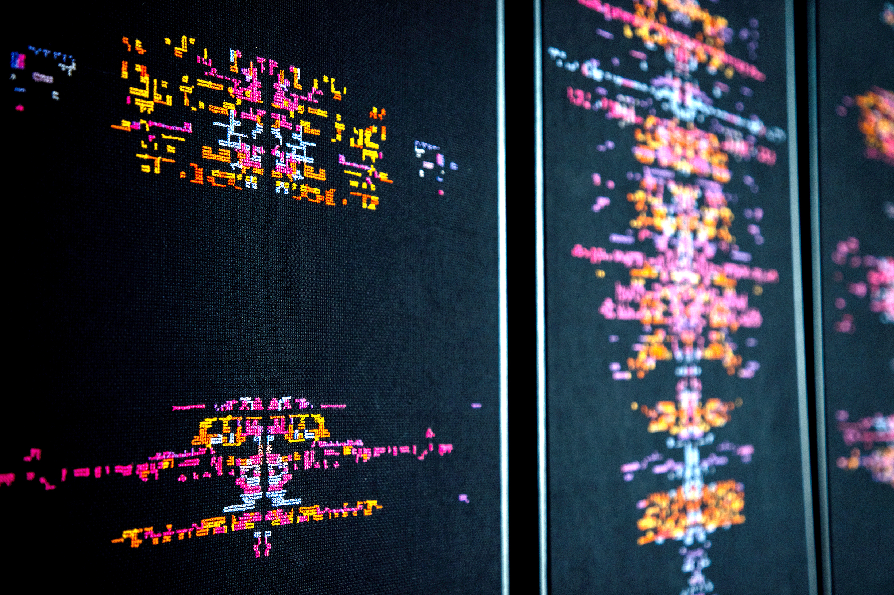
Publicaciones
Otros proyectos
En construcción.
Proyectos amigos
En construcción.
Isis Vargas (Zacatecas, Mx)
Artista transdisciplinaria. Maestranda en Tecnología y Estética de las Artes Electrónicas. En su investigación explora la relación entre algoritmos, sociedad y estética a partir del uso de datos, procesos materiales y medios experimentales, entendiendo la tecnología como una forma de mediación con el territorio y sus dinámicas.
Algunas participaciones son: Microresidencia Tsonami B.A.S.E, 2026; Microbeca “Rhizome”, 2026; Residencia “Wilderness” en Snowapple, CDMX, 2025; artista residente en el Festival Hello World, México, 2023; y 14 Bienal de La Habana, Cuba, 2022.
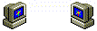